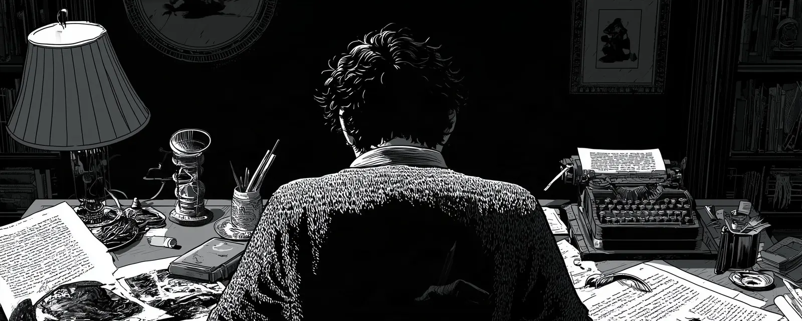
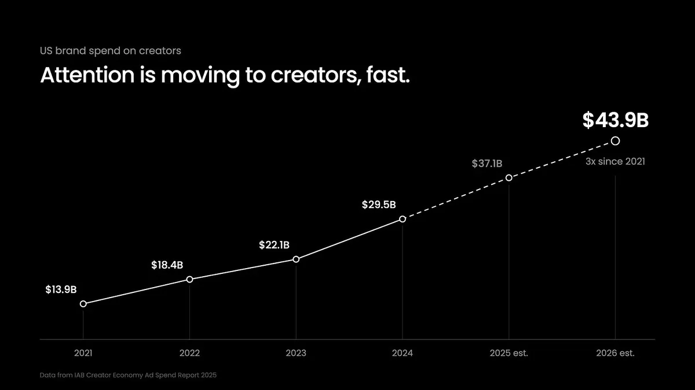
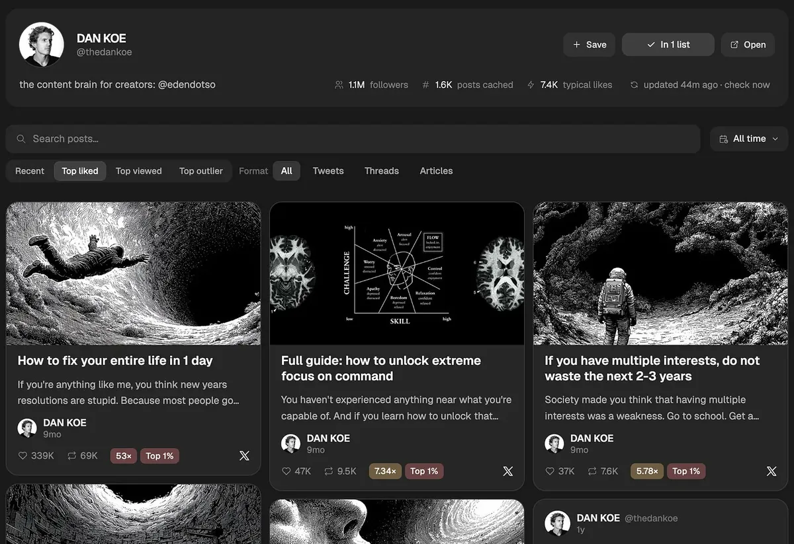

发布：2026-11-04 01:06（UTC+8），X Article。作者账号 @thedankoe（约 106.8 万关注）。互动数据（2026-11-04 09:44 UTC+8，经 X API 读取）：约 37.9 万次浏览、4,663 赞、479 转帖、160 引用、155 回复、10,058 收藏。
导读
这是第几篇。本站已收录 Dan Koe 两篇长文：《如何用一天彻底修好你的人生》讲身份与自我改变，《网红已死，“体验时代”来了》讲“匠人型创作者”与观点护城河。这一篇接着后者往下走，但把视角从“你怎么当创作者”换成“你怎么把做内容当成一门生意”——既可以给自己做，也可以卖给别人。主题与前两篇不同，所以单独成篇。
核心论点。注意力有限且越来越稀缺；不管软件做得多好、书写了多久，没人知道你就没人付钱。创作者经济在涨（文中引用了 Goldman Sachs、广告收入、IAB 三组数字，本站核对见下节），“创始人亲自做营销”成了创业圈的流行语，而多数创始人做不好。于是作者认为：最赚钱的单人 AI 生意，是成为自己或别人的“创意总监”。他说给 1–3 个客户做、月入 1 万–7.5 万美元“并非遥不可及”，同时也提醒这不是一夜暴富的机会（数字为作者判断 ⚠️）。
一人创意团队的三份工。
- 品牌策略师：管定位与认知，不让追热点损害信任和权威。
- 内容策略师：研究各领域什么在火（帖子格式、YouTube 标题与缩略图、留存、传播），提议下一批帖子。只有它没有品牌策略，创作者一停更就没人在意。
- 内容写手 / 社媒运营：起草推文、短视频脚本、X 长文、Substack，把前两者的方向落到每条内容上。
作者说竞争对手大多只让 Claude 无方向、无数据地批量写脚本，“几乎没人考虑品牌策略”，所以要冒头并不难。
流程：像接客户一样做个人品牌。
- 入职访谈，建立“思想签名”（Intellectual Signature）。录音、存转写稿，用一份问卷问清：你帮谁、你的故事、谁塑造了你的思想、内容支柱和独特视角、使命与信念、你反对什么、为什么是现在、你要把读者带到哪里、规则与自创词汇。这些不是一条帖子能讲完的，而是 6–12 个月的选题来源。
- 抓取最佳内容。客户已经在发内容，就让 AI 从各平台各拉 10–20 条最好的帖子，整理出让他独特的核心想法、有个性的语气、能聚拢人的世界观。目的不是让 AI 模仿声音（作者认为 AI 模仿不了个人的声音），而是建一个“这个人有什么独特之处”的知识库。
- 还没开始发内容？列出对你影响最大的 5–10 个人，对他们做同样的整理。你最好的想法，就是你对别人想法的解读。
- 做一张研究支撑的内容地图。3–4 个内容支柱 → 每个 5–7 个话题 → 每个话题 5–10 个想法 → 每个想法 4–5 个角度，再和过去 6–12 个月被验证有效的模式合并，作者说大约够写 6 个月。他把研究爆款比作艺术家收集参考，而非抄袭。
拿下第一个客户。作者讲了 JK Molina（他称其为“推特代笔”潮流的开创者）当年的做法：不请自来地先写 10 条帖子私信给他，“喜欢就让我继续写，不然给我一句推荐语也行”。作者称之为“无需许可的学徒”（Permissionless Apprentice）——先为梦想客户免费干活，再想办法让对方看到；可以每天发 10 条私信，也可以公开做，例如一条“Grant Cardone 需要一位新的创意总监，这是我的求职申请”的短视频，Grant Cardone 本人回了句“Hit me I’m stuck”。
怎么读这篇。这是一篇带推广的方法论长文：文中多处推荐作者自己的产品 Eden（研究爆款、MCP 接入 Claude/ChatGPT、品牌看板、AI 助手 Eve、$5/月的 30 天创作者冲刺、$249/月的团队与代理商方案），并为 11 月 10 日的 $49 写作工作坊引流。可以把它当成一份内容代理/代笔业务的入职清单来用：问卷、两段整理提示词、内容地图结构都不依赖 Eden，作者自己也说可以把问卷直接贴给 Claude。和本站已收录的 Tibo 的 X 增长 8 条、Addy Osmani 谈“签不了名的东西不发”一起读，可以看到同一个张力：AI 把起草变便宜了，判断与定位仍归人。
核对与 ⚠️ 注记
- ✅ Goldman Sachs：2023-04 的研究称创作者经济的总可服务市场（TAM）可能从 2,500 亿美元在 2027 年增至约 4,800 亿美元（Goldman Sachs Insights，2026-11-04 核）。注意这是预测，不是实际营收。
- ✅ “2025 年创作者广告收入约 1,850 亿美元，首次超过传统媒体”：对应 WPP Media《This Year Next Year》2025 年中预测——创作者生成内容带来的广告收入 1,849 亿美元、同比 +20%，并首次超过专业制作内容（WPP Media，2026-11-04 核）。原文未注出处；该数字发布时是预测值。
- ✅ IAB：美国品牌在创作者上的广告投放 2021 年 139 亿美元，2026 年预计 439 亿美元（IAB 2025 Creator Economy Ad Spend & Strategy Report，2026-11-04 核），与原文配图一致；2025、2026 为预测值。
- ⚠️ 未核实：“Hormozi 每月付给创作者超过 100 万美元推广 Skool”——作者称来自他看到的广告。
- ⚠️ 未核实：三段“内容代理商与媒体团队”的话是作者的转述（原文注明 paraphrasing），未给出具体来源。
- ⚠️ 作者判断：“1–3 个客户月入 1 万–7.5 万美元”“拿第一个客户 2,500–5,000 美元/月”“照做一个月至少拿下一个客户”。
- ⚠️ 自报：Hussain Ibarra 的 Substack 订阅从 2,600 增至 20,100（工作坊页写“10 个月内”）；JK Molina 私信一事为作者回忆。
- ⚠️ 未核实：Grant Cardone 短视频一例。原文嵌入的是 Instagram 用户 august_carlsson 的视频截图（截图显示约 2.01 万赞），本站未打开 Instagram 核对，也未转载该截图（第三方内容、含真人肖像）。
- 利益相关：Eden 是作者自己的公司（原文“I’m the founder of Eden”）。“掌握数十亿条帖子的数据”“除 Eden 外没有工具能做这件事”“GrokBot 这类应用很强但只能用在 X 上”均为作者说法 ⚠️，本站未实测 Eden。Eden 页面价格（冲刺 $5/月、团队 $249/月、工作坊 $49 含 30 天 Pro）为 2026-11-04 公开页面读取，可能变动。
- 原文的完整问卷/流程“提示词文档”放在 Eden 应用内笔记（app.eden.so），本站未抓取、未转载；下文问卷取自长文正文。
- 原文“You can ask Eve or AI to draft them”中的 Eve 是 Eden 内置的 AI 助手（Eden 导航栏“Eve AI”）。
全文中译
最赚钱的技能，向来是捕获注意力。
原因很明显。
如果你的目标是多赚钱，那你做的软件有多好并不重要；你花了 3 年、废掉无数稿子写成一本书也不重要；你努力工作、提升自己来增加职业机会，同样不重要。
如果没人知道你是谁、你提供什么，他们到底要怎么付钱给你？
也就是说，不管你做什么工作、建什么生意，捕获注意力、获取客户，都将是决定你成败的首要因素。
这既适用于你自己的生意，也适用于别人的生意。
而别人会花大价钱请你替他们做这件事。
随着工作保障越来越低，人们面前有 3 个选项：
- 抱怨人生不公平，然后什么都不做
- 提升技能、重新学习，找一份更好的工作
- 开始做自己一直想做的那门生意
会有多到离谱的人选第 3 个。
你大概猜得到，也正如社交媒体上所有人都在嚷嚷的那样，他们建这门生意的方式，就是开始做个人品牌。
为什么？
因为注意力是有限资源，而且只会越来越稀缺。人可以赚更多钱，但花出去的注意力永远拿不回来。
在这封信里，我会教你如何掌握社交媒体上的注意力捕获。这样，至少在接下来几年里，你不会为赚钱发愁。
学会之后，你可以用社交媒体为自己的生意提供燃料，也可以成为其他公司的“一人创意团队”，他们会为你的这套技能付高价。
推广——“第二次文艺复兴”工作坊：我和 Hussain Ibarra（Substack 订阅从 2,600 涨到 20,100）合作，教大家写出人们真想读的 newsletter 和文章。
如果你考虑过做 Substack，或想把 X 长文写得更好，可以在这里报名，49 美元，但它教你的技能能让你赚回远不止这个数。
一 你要么成为创作者，要么付钱给创作者，要么被创作者雇佣
数据几乎让人无法忽视。
Goldman Sachs 预测，创作者经济将近翻倍：从 2023 年的 2,500 亿美元增至 2027 年的 4,800 亿美元。
2025 年，创作者赚到约 1,850 亿美元的广告收入，这是他们第一次超过传统媒体。
2021 年美国品牌在创作者身上花了 139 亿美元，IAB 预计 2026 年将达到 439 亿美元——5 年大约 3 倍。

离谱。
我本人既是创作者、给创作者打过工，也付钱给创作者，人们开的价简直疯狂。到处都是大笔 VC 的钱，一条 reel 或 YouTube 视频里 60 秒的口播位就要付几千美元（而且 90% 的时候根本没效果）。
重点是：注意力在社交媒体上。不再是电台、电视或新闻。不管你想做什么生意——从谈自己兴趣的生活方式小生意，到下一个独角兽创业公司——发内容几乎已经是吸引付费受众的默认方式。
公司想扩张时，会往联盟和合作推广里砸几百万美元。我一直刷到 Hormozi 的广告，说他们每月付给创作者超过 100 万美元来推广 Skool。更别提 Hormozi 本人就是创作者，这极大地帮助了 Skool 的增长。
“创始人主导的营销（founder-led marketing）”如今是创业圈的流行语，意思基本上是：让你的创业公司增长的最新最好办法……你猜对了，就是做个人品牌、发内容（顺便说一句，他们大多数做得很烂，你大概应该开始用 Eden 来做研究、做出差异、发帖）。
这对你意味着什么？
不管你打算单干、已经有生意，还是想给别的企业打工——最值得学的赚钱技能都是捕获注意力。翻译到数字世界里，最赚钱的技能就是做内容——好内容，而不是无穷无尽的垃圾。
可惜的是，你可以精通捕获注意力，但这不代表你真的捕获到了。
一条推文或 reel 拿到一百万浏览，如果其余帖子每条只有一千浏览，那也没用。这说明你的内容还行，但你的品牌不存在。两者我们都需要。
你可以一直试图爆款，大多数人就是这么做的（这也是大多数人惨败的原因）；你也可以构建一个让人忍不住去探索的内容世界。
我来教你怎么做。
二 一人创意团队
内容领域此刻正在发生一场巨大的转变。
我是 Eden 的创始人。Eden 是一个工具，创作者和数字业务用它研究爆款想法、规划和排程内容、卖数字产品、运营邮件列表。
这不是推销。我是想说明：我们手里有几乎没人拥有的数据。我们知道在数十亿条帖子里，哪些话题、开头和内容风格有效。
除此之外，自由职业者和代理商也用它来运营客户的个人品牌，从内容到邮件营销，再到数字产品发售和搭建漏斗。
我们和这些内容代理商、媒体团队聊过，他们说的都是同样的话（转述）：
“我们还没开始裁人，但不用扩编就能多接很多活，因为每个人的产出都上去了。”
“创作者和创始人雇我们，是因为他们连想内容的时间都没有。他们要管团队、要经营生意，这需要专注。AI 可以替他们写内容，但他们知道自己仍然需要一个比他们更会用 AI 的策略师或创意总监。这依然需要创造力和思考。”
“AI 还写不出最好的帖子，我也不认为它永远写得出来，但它能研究什么在火、理解策略、写出八九不离十的草稿。我现在的全部工作就是审稿和改稿。以前一天要 12 个小时，现在 4 个小时。”
在我看来，（一个人）最赚钱的 AI 生意有两种。
第一，你可以成为自己的创意团队。做个人品牌。积累受众。做数字产品。建邮件列表。诸如此类。这就是你唯一的重心。相信我，即使有 AI，这也是一份全职工作。如果你是创作者，你大概不会在没有团队的情况下去做软件。
第二，你可以成为别人的创意团队。帮那些没有创作精力、做不出不可替代内容的公司、创始人，甚至创作者。大多数创始人还在发“公告式”内容，完全不知道在网上建立影响力需要什么。
换句话说，你成为自己品牌或别人品牌的创意总监。
如果你能做成，我看不出你为什么不能开出一个只占完整团队成本零头的价格。给 1–3 个客户做、每月 1 万到 7.5 万美元，并没有那么遥不可及（前提是你擅长并且肯练——别让你的脑子说服你这是下一个快速致富的机会）。往营销里砸几百万的老板们，对这个价格眼都不会眨。
这个一人创意团队长什么样？
你需要学哪些技能？
工作 1）品牌策略师
品牌策略师负责定位和认知。
他们会第一个站出来说：你不该只是追热点、每条都想爆。增长和互动很重要，但不能以牺牲信任和权威为代价。
顺便说一句，下面我会教你怎么做到这一切。
工作 2）内容策略师
和品牌策略师不是一回事。
内容策略师负责侦察各个话题和细分领域里什么内容表现好，并提议创作者接下来该发什么。他们深入研究帖子格式、YouTube 缩略图与标题结构、留存率和传播性。
他们擅长让账号增长，但如果不考虑品牌策略，创作者一旦停更，就没人会问他去哪儿了。
工作 3）内容写手 / 社交媒体运营
负责起草推文、YouTube 或 Reels 脚本、X 长文和 Substack newsletter，安排计划并发布。
他们把内容策略师的想法和品牌策略师的方向拿来，确保内容与之一致。
你大概能看出来，为什么大多数人用 AI 做不出任何长久的东西。他们仍然把它当成快速致富的套路，以为只要让 Claude 在没有方向、没有数据的情况下狂写脚本，就能神奇地和受众建立连接。
几乎没人考虑品牌策略。
有些人考虑内容策略。
大多数人只是把随机的想法变成帖子，然后祈祷它们表现好。
这就是你的竞争对手，要脱颖而出并不难。
三 如果你是我的客户，我会这样打造一个不可替代的个人品牌
我们来玩点有意思的。
我会假装正在为你办客户入职。
这样，如果你想成为创作者，你可以自己照着这套流程做；如果你想为别人做内容生意（代写推文、为品牌写 Substack 文章等），这就是你接客户的方式（后面我会给你一个拿下第一个客户的最佳策略之一）。
第 1 步）入职通话：建立他们的“思想签名”
要让他们的品牌和内容独一无二，你需要从他们那里拿到相当多的背景信息。
拿下客户后，约一次通话，把你需要的一切都访谈出来。把通话录下来，这样你能把转写稿存起来，之后用 AI 引用。
如果你是为自己的品牌做这件事，我已经有一套测验/提示词可以用，还附带一门 30 天创作者冲刺课程。它会根据当下正在爆的内容加上你的独特之处，替你搭出策略。可以在这里试用。
下面是你要问客户的问题，也可以拿来问自己。你也可以把它贴进 Claude，让它一点点把信息从你身上问出来，存成一份随时可以让 AI 引用的品牌文档。
所有这些问题都在塑造你的品牌。
它们可以衍生出内容话题，是你在 6–12 个月里持续发的东西。有人看了会问：“我怎么在一条帖子里把这些都讲完？”
你讲不完。这是一场长期游戏，也正是大多数人惨败的原因——他们想要快速的注意力和权威。祝他们好运。
因为太长，我把这些和更多内容放进了一份完整的提示词里，你可以保存或复制到你的工作区。（译注：该文档位于 Eden 应用内，本站未抓取、未转载。）
你帮谁
- 你最想帮的是谁？描述一个真实的人。
- 他们现在糟糕的一天是什么样的？
- 他们跟朋友抱怨时会说什么？用他们的原话。
- 他们已经试过哪些没用的办法？
你的故事
- 你经历过哪些你的受众正在经历的事？
- 事情发生转变的那一刻是什么（无论多小）？
- 你做过、试过、失败过、想通过什么？从大到小列出来，每一件都值得。
- 你能拿出哪些成果，你自己的或你帮过的人的？
谁塑造了你的思想
- 谁的书、帖子或视频你从不跳过？写出真实的人名和作品名。
- 他们的哪个想法你一再回到，为什么？
- 谁改变了你的思考方式，哪怕你现在不同意他了？
内容支柱与独特视角
- 你能一口气聊几个小时的是什么？全列出来，哪怕看起来毫不相关。
- 其中哪 2–3 个对你最重要？
- 在每一个上，你的切入方式和别人有什么不同？（例如“从心理学切入”或“作为前护士”）
- 人们最常向你请教什么？
- 你总是在一遍又一遍向人解释什么？
使命与信念
- 用一句话说：你想帮人们做到什么？
- 你相信哪些你所在领域多数人不相信的事？
- 你所在领域哪条常见建议你认为是错的？
你反对什么
- 哪种生活方式正在伤害你想帮的人？
- 你想帮他们逃离什么样的生活？用你自己的话回答。
- 如果可以，你想消灭哪个迷思或习惯？（一个习惯或观念，不是某个人或公司。）
为什么是现在
- 世界上刚刚发生了什么变化，而多数人还没注意到？
你要把他们带到哪里
- 关注你五年后，他们的日常生活是什么样的？
- 他们会在自己的简介里自豪地怎么称呼自己？
- 在他们的故事里你是谁？（他们的向导、记录这段旅程的人，还是一个逃出来又带着地图回来的人。）
规则与词汇
- 你的理想读者每天相信什么、做什么？列 5–12 条规则。
- 你有没有给自己的想法、方法或问题起名字？写下每个名字和它的含义。
把这些信息存在一个安全的地方，比如 Eden 里的品牌看板，这样你在构思帖子时随时可以引用。
第 2 步）如果他们已经在发内容，抓取他们最好的内容
我想我们都同意：AI 复制不了一个人的声音。
就算它接近了，也总会有那么一点点感觉不对。
这不是我们的目标。AI 处理公司口吻完全没问题，但个人品牌之所以叫“个人”，是有原因的。它需要那一点独特性。
我们访谈他们、拉取他们最好的内容，不是为了把整个流程自动化。而是要建一个知识库，装下这个人身上所有独特或值得一提的东西。当你用 AI 头脑风暴、起草或构思时，就比从零开始容易得多。
要拉取他们在所有平台上的最佳内容，可以用 MCP 把 Eden 接到 Claude 或 ChatGPT 上，让它能拉取他们的帖子或别人正在爆的帖子；给它对方的社交账号，再用类似这样的提示词：
Pull the best content from [@handles]. 10-20 posts from each platform they are on. Then, I want you to note down the core ideas that make them unique, the aspects of their voice that have personality, and a guess at what their worldview or philosophy is that could rally other people behind it. In essence, note down everything that led to their growth, and compile it into a document.
（中译）拉取 [@账号] 的最佳内容，他们所在的每个平台各 10–20 条。然后，记下让他们独特的核心想法、他们的声音里有个性的地方，并推测他们有什么能把别人聚拢起来的世界观或哲学。总之，把促成他们增长的一切都记下来，整理成一份文档。
也值得直接去看看他们在各平台上的热门帖子，找出可复制的模式。

第 2.5 步）如果你还没开始发内容
对新手来说，这可以说是你能做的最好的一件事。
你必须明白：你的头脑是被对你影响最大的那些人塑造的。你最好的想法——那些会带来增长的想法——是你对从别人那里吸收来的想法的解读。
类似“像艺术家一样偷”，只不过这本来就是大脑的工作方式。
接触到新想法时，能替换掉脑中正在运行的旧信念和旧想法，是智力的核心标志。死抱着不会带来好结果的信念和想法不放，则是愚蠢的标志。
我的头脑主要由 Naval、Leo Gura、Mihaly C（契克森米哈伊）、Steven Kotler、Ken Wilber 等人的想法糅合而成。这些想法在我脑中的相互作用，加上我自己的人生经历，让我的想法成为我的。
所以，如果你还没开始发内容，就列一个 5–10 人的名单，写下对你影响最大的人。
如果他们是创作者，那更好。把他们放进一个列表，这样你可以看到他们所有的内容，或者和这些内容对话。
然后用上面那段提示词，换成他们的社交账号。如果他们没有社交媒体，就让 AI 从网上和他们的书里提取他们最好的想法。存成一份文档，放在安全的地方。
第 3 步）做一张有研究支撑的内容地图
到目前为止，我们已经：
- 拿到了足够的品牌背景，能做出独特的东西
- 记录下了可以复用、重新定位和复制的最佳想法
现在，我们要戴上营销的帽子。
其实它甚至不是营销的帽子，而是艺术家的帽子。
大多数“创意人”一想到要研究爆款帖子、表现最好的 YouTube 标题，或按“更可能表现好”的方向做内容就很反感……但你只是从一个遮住了你真正在做什么的角度在看它。
你是在收集参考。
艺术家就是这么做的。他们有灵感板和参考资料来塑造自己的作品。他们不会一比一照抄，而是提取模式和原则，让自己的作品更可能成功。
因为说实话，你希望你的作品成功。你只是觉得看数据很恶心，好像它不算创作过程的一部分。醒醒吧。
你要做的是这个。
（免责声明：这封信里我提了很多次 Eden，因为坦白说，没有别的东西能做这件事。社交平台爬虫看不到跨多个账号什么在火；像 GrokBot 这样的应用很厉害，但只能用在 X 上，而你最好去研究那些你不在上面发内容的平台，才能拿到独特的想法。）
就是用这段提示词，把你到目前为止做的 2 份文档塞进去，就这么简单：
I want you to create a research backed content map: 3-4 unique and broad content pillars that branch into 5-7 topics that are both based on ideas that are working, through my own unique lens based on [@ brand document] and [@ content document]. Branching off each topic should be 5-10 ideas that are likely to perform well, with 4-5 angles branching off of each of those ideas.
Look over my brand and content docs, pull potential pillars and my lens out of it, then use Eden to research what’s performing across platforms in those topics. We want a unique content map, but we want to merge it with patterns that have been proven to perform over the past 6-12 months.
Put the output in an easy to read document.（中译）我想让你做一张有研究支撑的内容地图：3–4 个独特而宽泛的内容支柱，每个分出 5–7 个话题；这些话题既基于正在奏效的想法，又透过我自己独特的视角——依据 [@品牌文档] 和 [@内容文档]。每个话题再分出 5–10 个可能表现好的想法，每个想法再分出 4–5 个角度。
看一遍我的品牌和内容文档，从中提炼可能的支柱和我的视角，然后用 Eden 研究这些话题在各平台上什么表现好。我们要一张独特的内容地图，但要把它和过去 6–12 个月被证明有效的模式结合起来。
把结果放进一份易读的文档里。
现在你有了大约 6 个月可用的内容想法。你可以让 Eve 或别的 AI 利用前面准备好的背景来起草，并根据当下表现好的内容来验证帖子结构。
我觉得很难否认照这个流程做会看到成果，而且它能让你把没这么做的人甩开好几条街。
如前所述，这里有一份可以复制的文档/提示词，包含整个流程。读完可能要花点时间，但它很全面。
四 如何拿下你的第一个客户
几年前，我的朋友 JK Molina（基本上是他开创了“当推特代笔”这股潮流）给我发了条私信。
大意是这样：
“Dan，我知道你不想让任何人替你写，但我还是给你写了 10 条帖子。发发看，喜欢的话就让我继续写，或者给我一句推荐语也行。”
在做社交媒体之前，我是个自由职业者，陌生开发（cold outreach）简直是地狱。我恨死它了。
但收到这条私信时，我意识到，这一定是拿下一个月付 2,500 到 5,000 美元的内容客户的最佳策略之一。你可以瞄准正忙的创作者、创始人，或者正苦于增长的人。
你可以用一段提示词把上面讲的一切替他们做完，让它起草 10 条帖子，打磨好，每天发 10 条私信。
如果你真这么做了，我很难相信你一个月内连一个客户都拿不下。
这就是“无需许可的学徒（Permissionless Apprentice）”打法。
你先为梦想客户免费干活，然后想尽办法让他们看到。
如果私信不管用，就像这样公开做——X、Substack 或其他任何平台都行：
（原文此处嵌入一张 Instagram 短视频截图：发布者 august_carlsson，画面标题“Grant Cardone Needs a New Creative Director”。本站未转载该截图。）
在那条 reel 里，他用这句话钩住了观众：“Grant Cardone 需要一位新的创意总监，这是我的求职申请。他的内容好像还停在 2016 年。”
我认为，Grant Cardone 回复“Hit me I’m stuck”（找我，我卡住了），以及这条帖子的互动量，证明了我在这封信里说的大部分内容。这是一个巨大的机会，就在当下。而你已经有了全部工具，去拿下这些客户、为他们办入职，并为他们做出很棒的内容。
希望对你有帮助。
——Dan
再提一次：教你写出让人忍不住读下去的 newsletter / 文章的工作坊在 11 月 10 日举行。如果你想把长内容写作学成一项技能，可以在这里报名。
作者回复与评论区
- 作者回复：经 X API 检索
conversation_id:2117664712532123680 from:thedankoe（2026-11-04 09:44 UTC+8），作者本人未在该串下发表任何回复或补充；原文没有引用帖或推文串。 - 评论区摘选（意译，读取时约 155 条回复）：@amigolu_ 说“思想签名”这个概念最击中自己，打算接下来就去梳理；@arnavsawantt 从电商角度补了一句——注意力只换来第一单，第二单是仓储和客服问题，“多数人先造好了扩音器，却没造出让人复购的东西”；@ransoud 认为越是注意力稀缺，越重要的是执行力；@JulianLiu0414 追问“工具变便宜后哪种 AI 生意还守得住”。中文区大量回复是请 @grok / @bot 翻译本文；@leo_xiaolei 发了一份中文译本。
原文链接
- 原文：x.com/thedankoe/status/2117664712532123680
- 文中链接（均为作者自家 Eden）：eden.so、eden.so/workshop（11-10 工作坊，$49）、eden.so/sprint（$5/月 + 30 天创作者冲刺）、eden.so/features/creators、eden.so/agencies（团队/代理商方案）、Eden 应用内提示词文档（未抓取）。
- 数据出处（本站补）：Goldman Sachs · WPP Media · IAB